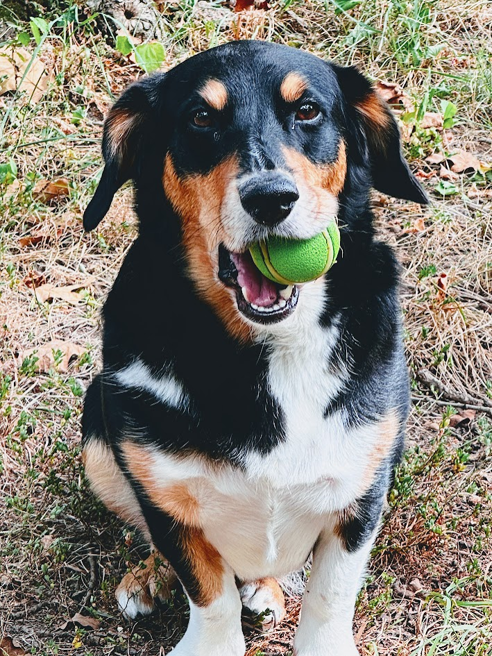

Resource Links

What is Zdog?

Zdog, like many great ideas, was inspired by a angel dog.
Now… we aren’t here to argue the semantics of how great dogs are, but Zdog represents more than just that, its that deep feeling in everyone, to greet your loved ones at the door, chase a ball, get outside, and always enjoy yourself a little treat.
The ultimate goal of Zdog is to create a place to catalog our adventures, become an outdoor resource and chase a passion of something larger. We hope you find valuable information in our pages and look for ways to get outside. Catch you on the flipside.
Zdog Outdoors
Check out my latest outdoor adventures!
Mike's 57 Chevy
Current River Float Trip
Relaxing Wind in the Pines